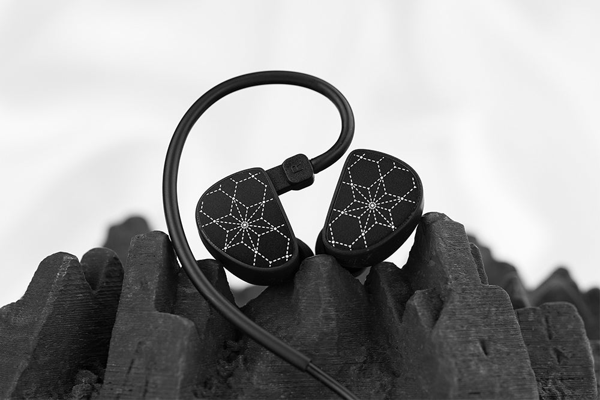

Keseimbangan yang Ideal
Hola menghadirkan keseimbangan yang ideal antara kegembiraan audio dan kesetiaan reproduksi. Dengan rentang frekuensi yang luas dan respons yang linear, IEM ini memungkinkan pengguna untuk menikmati berbagai jenis musik dengan detail yang luar biasa. Baik Anda seorang penggemar musik pop yang ceria atau seorang audionut yang menuntut, Hola akan memenuhi kebutuhan Anda dengan sempurna.
Kemudahan Penggunaan dan Keterjangkauan
Truth Ear Hola juga menonjol dalam hal kemudahan penggunaan dan keterjangkauan. Dengan kabel yang dapat dilepas dan opsi ear tips yang disesuaikan, pengguna dapat menyesuaikan Hola sesuai preferensi dan kebutuhan mereka dengan mudah. Harga yang terjangkau membuatnya menjadi pilihan yang menarik bagi mereka yang ingin meningkatkan pengalaman mendengarkan mereka tanpa menguras dompet.